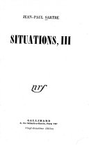
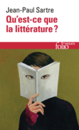
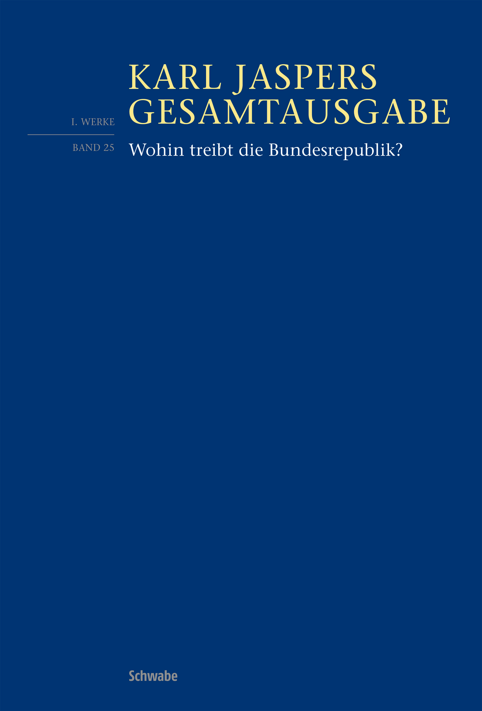
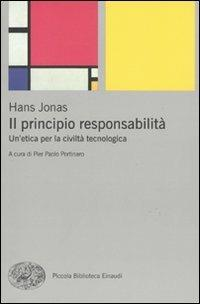
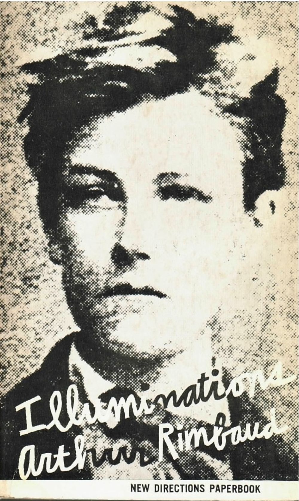
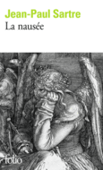

32:04 · 10 OPERE
Sartre e Camus: i "salauds" ed i giusti.
Il filo del discorso
Partendo dalla Repubblica del silenzio di Sartre, Dr Divago riflette sulla scelta morale quando il potere tenta di imporre agli individui una rappresentazione di sé. Il paradosso della libertà sotto l’occupazione tedesca viene letto come possibilità di pensare e dire di no, anche davanti a conseguenze gravi: non è un elogio dell’occupazione. Il relatore collega questa autonomia al dubbio cartesiano e al titolo dell’autobiografia di George Grosz, poi riprende Che cos’è la letteratura?
Leggi la sintesi completaRiduci la sintesi
per discutere un male che la sola comprensione intellettuale non elimina. La contrapposizione fra i salauds sartriani e i giusti di Camus introduce la responsabilità personale oltre l’identità di gruppo. Perlasca e Kolbe sono proposti come esempi di azioni capaci di contraddire un passato o un contesto; occorre tuttavia distinguerne con precisione le vicende. Nella chiusa un articolo di Gérard Bejjani, scritto sulla crisi libanese, è applicato polemicamente al presente del relatore. Le analogie con il periodo successivo al 2020 restano sue valutazioni, senza equivalenza storica accertata con la persecuzione nazista o validazione di conclusioni sanitarie.
I libri nel discorso

La République du silence
Note sul riferimento
Frontespizio della raccolta Situations III: Frontespizio di Situations III, Gallimard, nella serie originaria; raccolta del 1949 che contiene l’articolo del 1944.
Frontespizio autentico della raccolta Gallimard Situations III, digitalizzata dalla Rutgers University. Non è una copertina autonoma dell’articolo La République du silence. Nella nuova serie riordinata da Arlette Elkaïm-Sartre la numerazione dei volumi cambia: non va scambiata con Situations III. Littérature et engagement del 2013.
Titolo La République du silence, data del 9 settembre 1944 e raccolta Situations III esplicitamente indicati.

Discorso sul metodo
Identificazione probabile
Note sul riferimento
Copertina: Laterza · Economica 127 · opera in collana dal 1998, ristampa 2025 · traduzione di Maria Garin
Immagine autentica dell’opera, controllata visivamente; l’edizione di riferimento non è attribuita al filmato.
Il dubbio e il cogito di Cartesio; opera non nominata, rinvio probabile senza escludere le Meditazioni.
Un piccolo sì e un grande no
Note sul riferimento
Frontespizio dell’autobiografia, edizione inglese 1946: Frontespizio di A Little Yes and a Big No, Dial Press, New York, 1946; traduzione di Lola Sachs Dorin.
Frontespizio autentico dell’edizione Dial Press 1946, digitalizzata dall’University of California. Non è una copertina esterna né l’edizione italiana Longanesi. La prima traduzione italiana, di Luca Pavolini, è del 1948.
George Grosz e l’autobiografia Un piccolo sì e un grande no, con data 1946 riferibile alla prima edizione inglese.

Qu’est-ce que la littérature ?
Note sul riferimento
Copertina: Gallimard, Folio essais 19, 1985, ISBN 9782070323067.
Immagine autentica dell’opera, controllata visivamente; l’edizione di riferimento non è attribuita al filmato.
Titolo Che cos’è la letteratura? e passaggi sul male esplicitamente discussi.

La questione della colpa
Note sul riferimento
Copertina: Raffaello Cortina
Jaspers e la Schuldfrage esplicitamente richiamati.

Wohin treibt die Bundesrepublik?
Identificazione probabile
Note sul riferimento
Copertina: Schwabe, Karl Jaspers Gesamtausgabe I/25, 2026, a cura di Bernd Weidmann; edizione critica del testo del 1966 con interviste e risposta del 1967.
Immagine autentica dell’opera, controllata visivamente; l’edizione di riferimento non è attribuita al filmato.
Libro di Jaspers degli anni Sessanta sulla direzione della Repubblica federale, titolo parafrasato.

Il principio responsabilità. Un’etica per la civiltà tecnologica
Note sul riferimento
Copertina: Einaudi, Piccola Biblioteca Einaudi, 2009; cura Pier Paolo Portinaro, traduzione Paola Rinaudo.
Immagine autentica dell’opera, controllata visivamente; l’edizione di riferimento non è attribuita al filmato.
Hans Jonas e Il principio responsabilità esplicitamente nominati.

Matinée d’ivresse
Identificazione probabile
Note sul riferimento
Copertina della raccolta Illuminations: Copertina della raccolta Illuminations, New Directions, edizione bilingue con traduzione di Louise Varèse, 1957.
Copertina autentica della raccolta bilingue New Directions, traduzione di Louise Varèse, ISBN 9780811201841. Il rimando riguarda il poema Matinée d’ivresse, non una sua edizione autonoma. Non è la successiva traduzione di John Ashbery.
Rimbaud e il tempo degli assassini: chiusa riconoscibile di Matinée d’ivresse, titolo non pronunciato.

La nausea
Note sul riferimento
Copertina: La Nausée, Gallimard, Folio 805, 1972; copertina dell’edizione francese.
Immagine autentica dell’opera, controllata visivamente; l’edizione di riferimento non è attribuita al filmato.
La nausea esplicitamente nominata parlando della categoria dei salauds.
I giusti
Identificazione probabile
Note sul riferimento
Copertina: Les Justes, Gallimard, Folio 477, 1973; copertina dell’edizione francese.
Immagine autentica dell’opera, controllata visivamente; l’edizione di riferimento non è attribuita al filmato.
I giusti di Camus e la rinuncia all’amore in nome della giustizia: probabile rinvio al dramma.